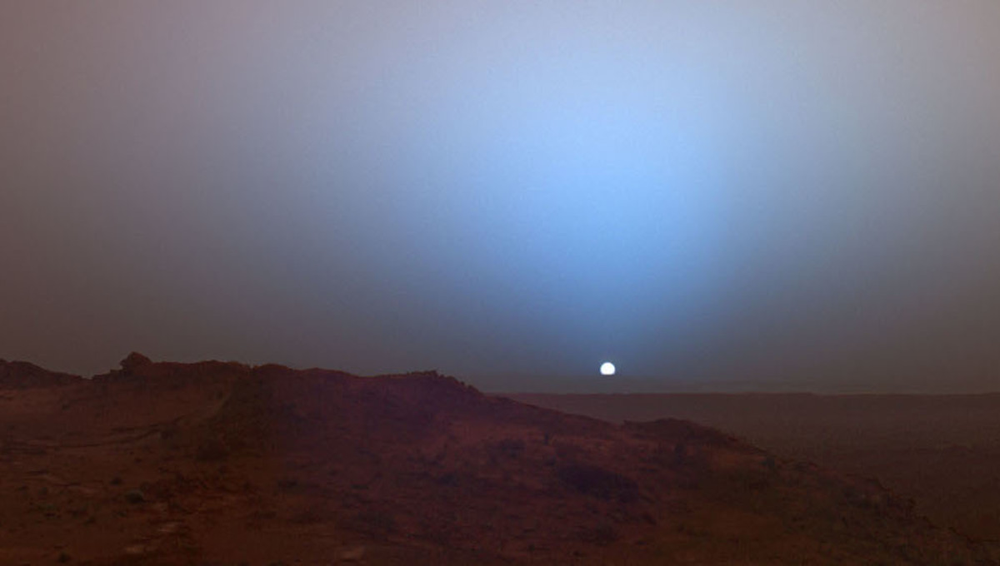

Fact
1. Peluncuran ke luar angkasa itu mahal.
Untuk mengirimkan sesuatu ke luar angkasa itu sangat mahal. Misalnya untuk mengirim buah lemon, harus menyiapkan uang USD 2.000 per buahnya. Kebayang kan kalau mau mengirimkan perbekalan selama setahun perlu uang berapa?
Ahli muatan dan insinyur stasiun luar angkasa yakni Ravi Margasahayam mengatakan bahwa setiap pon muatan yang dikirimkan ke luar angkasa terkena biaya $ 10.000. Harganya pun telah meroket karena biaya kargo pesawat luar angkasa Cygnus milik Cykeus sebesar USD 43.180 per pon, dan kapal induk baru SpaceX sekitar USD 27.000 per pon. Wih, mahal banget.
2. Matahari terbenam di Mars berwarna biru.

Biasanya kalau kamu menyaksikan sunset alias matahari terbenam di Bumi akan berwarna orange. Ternyata hal ini akan berbeda jika kita menyaksikan matahari terbenam di Mars, warnanya biru lho! Gimana menurut kamu, keren gak kalau sunset-nya berwarna biru?
NASA mengatakan ini karena "debu di atmosfer Mars memiliki partikel halus yang memungkinkan cahaya biru menembus atmosfer lebih efisien daripada warna panjang gelombang lain seperti kuning, oranye, dan merah.
3. Angkasa gak hanya dingin tapi bisa sangat panas.
Jika kamu menganggap luar angkasa itu dingin, kamu salah. Kenyataannya, suhu di luar angkasa tak semua dingin. Malah bisa jadi sangat panas. Di bagian gelap luar angkasa suhu bisa capai -454 derajat Farenheit atau -270 derajat Celcius, bisa langsung membeku ya!
Namun jika astronot mengorbit di dekat bumi di bawah terpaan sinar mentari, suhu bisa mencapai 250 derajat Farenheit atau 121,111 derajat Celcius yang artinya panasnya seperti air mendidih!
4. 15 detik adalah waktu untuk bertahan di luar angkasa tanpa baju khusus astronot.
Kamu pernah nonton Film Gravity? Nah, di sana perjuangan bertahan hidup di angkasa ditampilkan dengan sangat keras bukan? Kenapa hanya bisa sebentar bertahan di luar angkasa tanpa pakaian astronot?
Rupanya karena tidak adanya tekanan di luar angkasa yang membuat udara mengemban. Alhasil udara di paru-paru kamu bisa merusak jaringan. Akibatnya tubuh menggunakan semua oksigen dalam darah dan akan berujung merusak banyak organ. Serem banget kan!
5. Stasiun Ruang Angkasa Internasional (ISS) seluas lapangan sepak bola.
The ISS adalah stasiun Ruang angkasa yang merupakan proyek gabungan 16 negara seperti AS, Rusia, Jepang, 11 negara Uni Eropa, Brazil dan Kanada. Tahukah kamu, adanya proyek gabungan ini membuat stasiun luar angkasa dapat berukuran sangat besar. Hampir seluas lapangan sepak bola dan memiliki berat hingga 41.957 kg atau hampir sekitar 42 ton. Menjadikannya sebagai struktur buatan manusia paling besar yang mengorbit di luar angkasa.
6. 99,8% massa dari tata surya kita adalah Matahari.
Wah dengan presentase sebesar itu, planet dan benda langit lain dalam sistem tata surya kita hanya setitik debu massanya dibanding dengan massa matahari yang mencapai 1.989 × 10 pangkat 30 kilogram. Benar-benar sangat berat ya!
7. Luar angkasa gelap padahal banyak bintang.
Pasti kamu pernah berpikir kenapa luar angkasa gelap padahal banyak bintang? Rupanya ini disebabkan karena alam semesta tidak statis. Edwin Hubble menemukan bahwa alam semesta mengembang, dan radiasi termal yang tersisa dari Big Bang menempatkan alam semesta pada usia 13,8 miliar tahun.
Kita tak melihat bintang di segala arah karena beberapa bintang belum cukup lama untuk menyinari cahaya mereka agar mencapai kita. Sehingga luar angkasa jadinya gelap deh walau banyak bintang.
Planets
1. Planet Merkurius

Karena jarak matahari dekat jadi membuat masa revolusinya hanya selama 88 hari saja namun masa rotasinya cukup lama apabila di bandingkan dengan bumi hanya berkisar 59 hari saja.
Matahari akan terlihat dua kali lebih besar bila di lihat dari planet merkurius didandingkan dilihat dari bumi. Suhu permukaan Merkurius bisa mencapai 427˚C pada tengah hari dan-184 ˚C pada tengah malam.
2. Planet Venus
Planet venus adalah planet kedua yang paling dekat dengan Matahari setelah Merkurius di dalam susunan tata surya. Planet ini megorbitkan Matahari selama 224,7 hari .
Selain bulan, planet ini merupakan objek alami tercerah di langit malam, dengan mgnitudo tampak sebesar -4,6 yang cukup cerah untuk menghasilkan bayangan.
Untuk melihat kecerahan planet venus dari bumi ketika sebelum matahari terbit atau setelah matahari terbenam, sehingga di sebut bintang fajar atau bintang senja.
Tetapi planet ini berbeda dengan bumi, planet venus memiliki atmosfer yang terdiri dari 96% karbondioksida. Tekanan atmosfer di permukaan venus 92 lebih besar dibandingkan dengan bumi.
3. Planet Bumi
Planet bumi atau planet Earth adalah urutan nomor tiga dari matahari. Bumi adalah salah satu planet dalam tata surya yang bisa mendukung kehidupan.
Karena jaraknya dari matahari, yaitu atmosfer yang bersifat melindungi, dan suatu campuran bahan kimia yang tepat. Bumi merupakan suatu planet yang dinamis, yang secara konstan mendaur ulang dirinya sendiri.
Disaat saat bumi mengelilingi matahari dalam satu orbit, Bumi berputar pada satu sumbu sebanyak 366,26 kali, yang menciptakan 365,26 hari atau tahun sideris.
Perputaran bumi pada sumbunya miring 23,4˚ dari serenjang bidang orbit, yang meyebabkan terjadinya perbedaan musim di permukaan dengan periode satu tahun tropis. 365,24 hari matahari.
4. Planet Mars
Planet Mars adalah planet yang di temukan di air oleh Lembaga Antariksa Amerika Serikat, dimana di dalam sebuah kehidupan air merupakan hal yang sangat penting untuk berlangsungnya kehidupan.
Temperatur mars mencapai 50˚C-60˚C, Suhu bisa mencapai 100 di bwah nol ketika malam hari. Planet mars memiliki Kala rotasi 4,6 jam dan kala revolusinya 687 hari.
Matahari dan mars di dalam susunan tata surya memilliki jarak sekitar 247.1 juta km. Selain itu juga, planet mars memiliki satelit seperti bumi, bahkan satelit mars ada dua yaitu Phobos dan Deimos.
5. Planet Jupiter
Merupakan salah satu nama planet yang sangat terkenal yang memiliki urutan ke lima planet terbesar dalam tata surya. Bahkan, ukuran planet ini merupakan dua kali gabungan dari seluruh planet yang ada dalam tata surya.
Planet ini terbesar dalam susunan tata surya memiliki diameter sebesar 142.984 km (88.846 mil) di khatulistiwanya. Kepadatan jupiter, yaitu 1,326 g/cm³, merupakan terbesar kedua diantara raksasa gas.
6. Planet Saturnus
Planet saturnus ini di kenal sebagai planet bercincin dan juga merupakan planet terbesar kedua dalam susunan tata surya planet setelah jupiter.
Planet saturnus ini di kenal sebagai planet bercincin dan juga merupakan planet terbesar kedua dalam susunan tata surya planet setelah jupiter.
Susunan planet saturnus ini sebagian besar berupa gas dan cairan dan mempunyai kerapatan yang rendah. Dan memiliki bentuk yang diratakan di kutub dan dibengkakkan keluar di sekitar khatulistiwa.
Diameter khatulistiwa saturnus, sebesar 120.536 km (74.867 mil) diameter dari kutub utara ke kutub selatan sebesar 108.728 km (67.535 mil), berbeda 9% bentuk yang diratakan karena rotasinya yang sangat cepat.
7. Planet Uranus
Planet ini di yang temukan oleh Wilhelm Herschell pada tahun 1781 di Inggris. Pada revolusi 84 tahun dan rotasi 17 jam dan planet ini mempunyai warna kebiru-biruan.
Dalam urutan tata surya planet ini memiliki urutan ke tujuh. Atmosfernya sangat di kenal terdingin dalam sistem tata surya planet, dengan suhu terendah 49 K (-224˚C).
Selain itu kerapatanya 1,27 g/cm³ membuat planet ini paling rendah kedua kepadatannya setelah Saturnus meskipun bergaris tengah lebih lebih besar daripada Neptunus (kira-kira garis tengah bumi), Uranus lebih ringan.
8. Planet Neptunus
Neptunus adalah planet terjauh dari matahari. Kondisi planet ini hampir sama dengan planet Uranus. kedua planet ini sering di sebut planet kembar.
Diameternya (49.530 km) menjadikan planet neptunus terbesar ke empat dan terbesar ketiga berdasarkan massa. Planet neptunus tercatat 17 kali lebih besar dari Bumi dan sedikit lebih besar dari Uranus.
Neptunus memiliki Masa sebesar 1.o243x10 pangkat 26 kgatau 1/19 kali massa jupiter. Jari-jari khatulistiwa tertulis sebesar 24.764 km, atau sekitar empat kali jari – jari bumi.
9. Planet Pluto
Planet yang satu ini sekarang sudah tidak ada di dalam susunan planet tata surya. Tapi ada baiknya mengetahui tentang Pluto yang dulu sempat di kenal sebagai planet yang termasuk dalam anggota sistem tata surya.
Pada tahun 1930 planet pluto secara resmi diberi label planet kesembilan dengan International Astronomical Union dan nama untuk dewa Romawi bawah.
Pluto menyeberang di dalam orbit Neptunus pada tanggal 21 Januari, 1979 dan membuat pendekatan terdekatnya dengan Matahari pada tanggal 5 September, 1989.
Demikian pembahasan tentang nama planet tata surya beserta pengertiaan planet,nama-nama planet didalam tata surya dan penjelasannya. Semoga bermanfaat,dan Terima kasih.